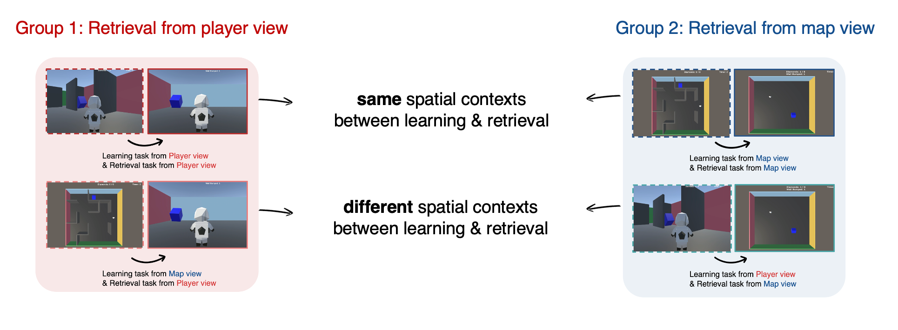
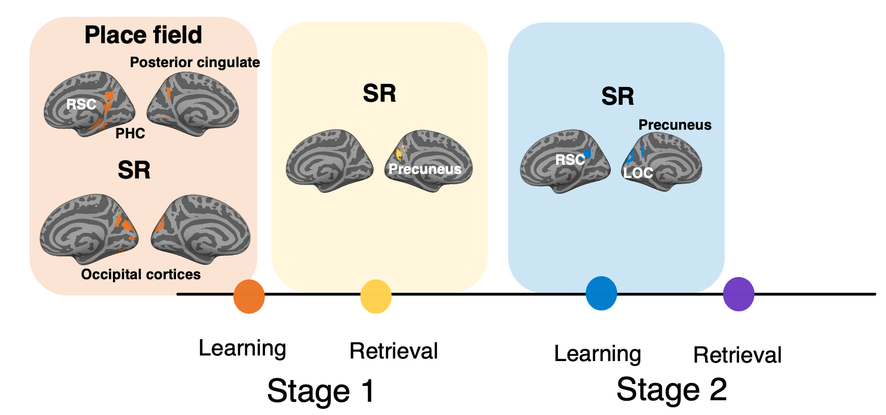

How do we become good navigators through repeated experience, and under what conditions? We divided the maze task into two subtasks, a learning task with the walls visible and a retrieval task with the walls invisible. We found that participants became good at navigating, especially when the context at learning matched the context at retrieval. When the contexts matched, their behavior was also more flexible. This study implies that spatial memory is bound to the context in which it was learned, and that a matching context is what allows it to be used flexibly.

M. Jo*, S-J. Hong, M-S. Kang* (in prep). Spatial context guides the retrieval and flexible use of spatial memory.
fMRI experiment
What does the brain represent while navigating a maze it has learned? We scanned participants performing the same maze task and compared their neural representations against four candidate models. Three of them capture physical properties of the maze, while the fourth, a successor representation, captures the experience of moving through it. The successor representation fit best. In prefrontal cortex the length of the predictive horizon followed an anterior-to-posterior gradient, and in posterior hippocampus the predictive code grew stronger as the maze became familiar. This study implies that a learned environment is stored not as a record of where things are, but as an expectation of where you are about to be.

Ultra high field fMRI (7T) experiment
How does the way we explored an environment shape what we later remember about it? Participants play a card matching game laid out in three dimensions, learning stimulus-location pairs de novo inside the scanner, so that every trace of the environment is built during scanning. We are asking two things. The first is how the exploration that came earlier is put to use once the layout has to be recalled. The second is how the representation of that exploration is reorganized as the pairs are learned in the hippocampus. Data were acquired at 7T and analysis is underway.